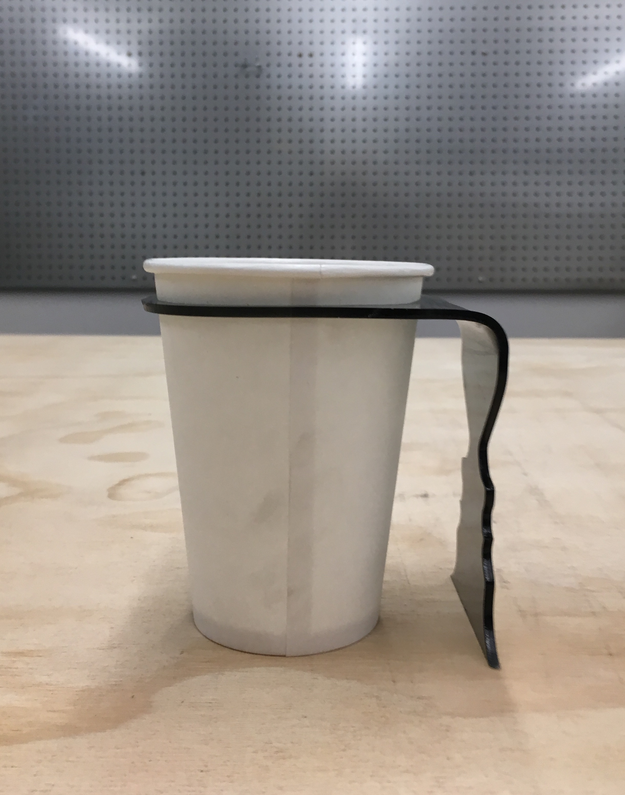
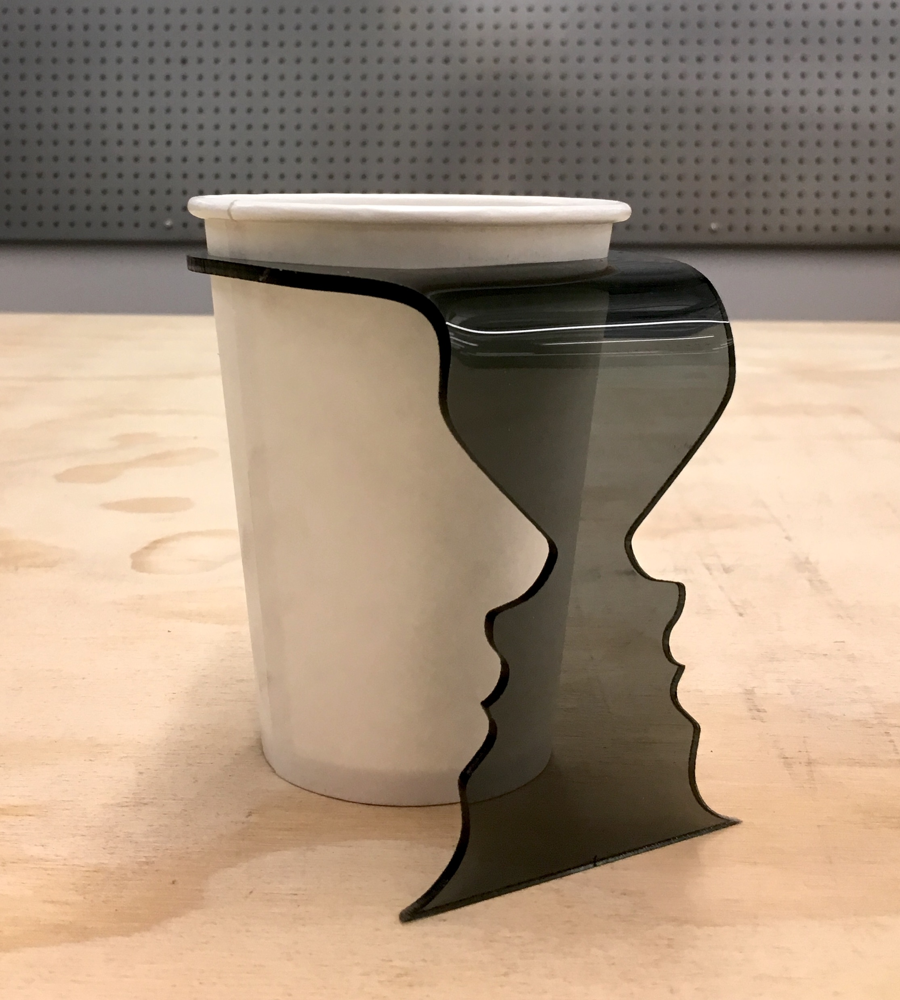
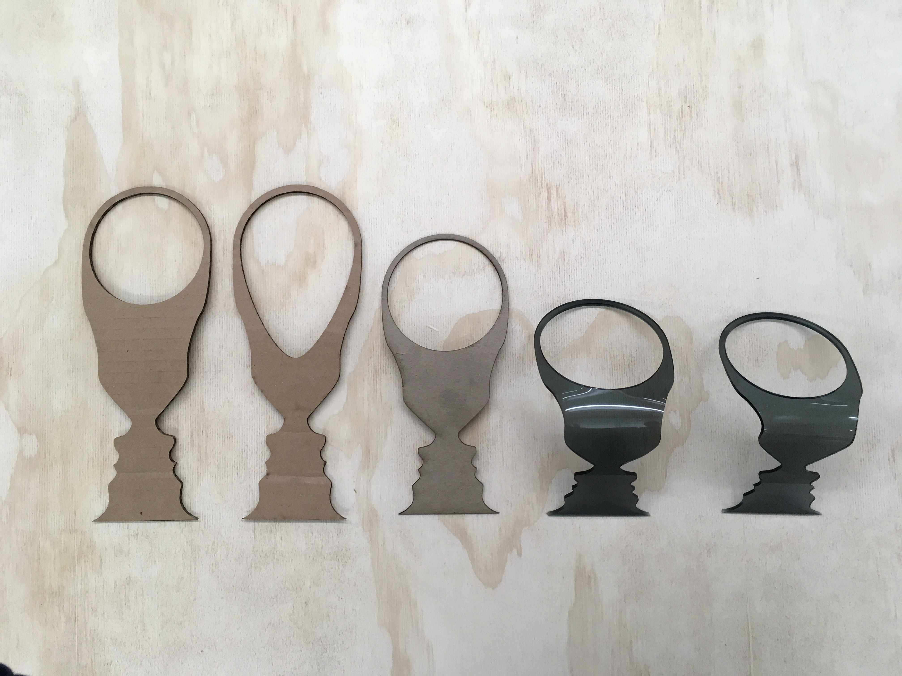
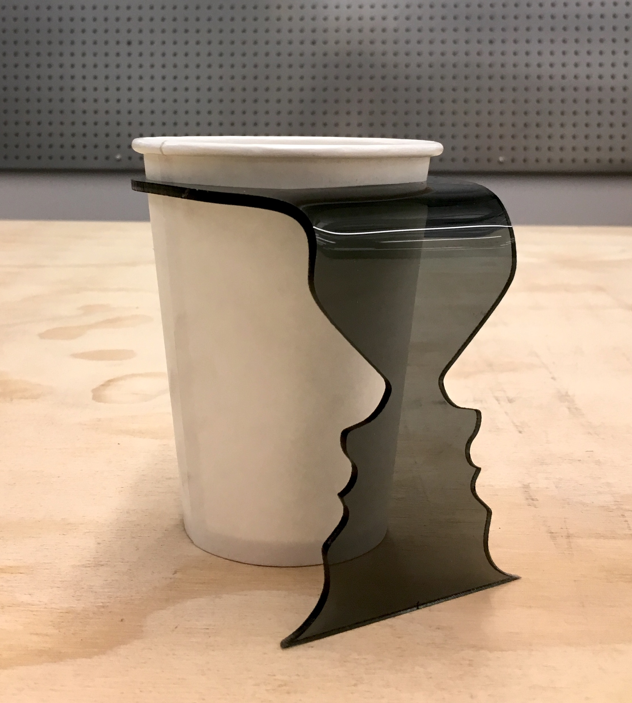
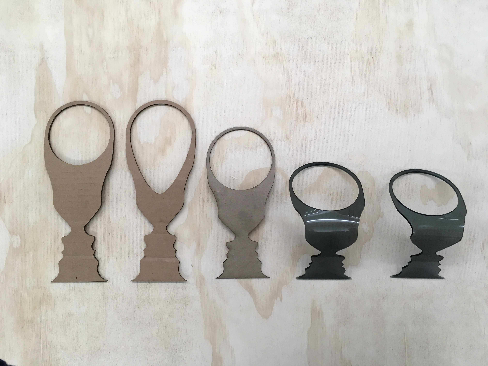

Home | DIY Projects
Rubin Co. VSE-1915 Cup Handle
Product Description
The Rubin Co. VSE-1915 single-sheet coffee cup handle ensures a steady grip on hot (or cold) beverages, and ameliorates the burns or spills an otherwise grip-less cup may be prone to. Never again will your eyes be bored while drinking coffee, as the single-sheet of acrylic is cut and formed to create an ergonomic grip, but also to create a face-vase illusion along the handle. Click Here for the product flyer pdf.
Product Features
- Acrylic handle fits snugly and ensures a steady grip
- Edgar Rubin's Vase-Face illusion along the handle adds a unique artistic flair
- handle ridges ensure easy grip surface
Final Product Images

Profile view of final cup holder, and cup.

45degree view, highlighting the face-vase.
Face-vase head on.
On the non-handle side, the handle is entirely hidden.
More of the illusion, no cup (1)
 More of the illusion, no cup (2)
More of the illusion, no cup (2)
 More of the illusion, no cup (3)
More of the illusion, no cup (3)
Design and Fabrication Photos
 After taking dimensions of cup, I experimented with three versions of the final idea (the face-vase)
After taking dimensions of cup, I experimented with three versions of the final idea (the face-vase)
 I settled on the more slick middle one.
I settled on the more slick middle one.
 Some more progress shots (1)
Some more progress shots (1)
Some more progress shots (2)
Once everything was properly tolerenced, the final design was first prototyped with cardstock
Some more progress shots (3)
The first attempted cut in acrlic came out as hoped for! The single bend was very easy using a heat gun and a clamp.
However, after bending the cup hole diameter increased just enough that it did not hold the cup properly (hence the tape in this photo)
It did look nice though
 After some quick measuing, I reduced the size of the hole by 3%, and all fit as snug as a bug.
After some quick measuing, I reduced the size of the hole by 3%, and all fit as snug as a bug.
 From left to right, each iteration of the final design (1)
From left to right, each iteration of the final design (1)

From left to right, each iteration of the final design (2)
The Rubin Co. VSE-1915 single-sheet coffee cup handle ensures a steady grip on hot (or cold) beverages, and ameliorates the burns or spills an otherwise grip-less cup may be prone to. Never again will your eyes be bored while drinking coffee, as the single-sheet of acrylic is cut and formed to create an ergonomic grip, but also to create a face-vase illusion along the handle. Click Here for the product flyer pdf.
Product Features
- Acrylic handle fits snugly and ensures a steady grip
- Edgar Rubin's Vase-Face illusion along the handle adds a unique artistic flair
- handle ridges ensure easy grip surface
 45degree view, highlighting the face-vase.
Face-vase head on.
On the non-handle side, the handle is entirely hidden.
More of the illusion, no cup (1)
More of the illusion, no cup (2)
More of the illusion, no cup (3) Design and Fabrication Photos
After taking dimensions of cup, I experimented with three versions of the final idea (the face-vase)
I settled on the more slick middle one.
Some more progress shots (1) Some more progress shots (2)
Once everything was properly tolerenced, the final design was first prototyped with cardstock
Some more progress shots (3)
The first attempted cut in acrlic came out as hoped for! The single bend was very easy using a heat gun and a clamp.
However, after bending the cup hole diameter increased just enough that it did not hold the cup properly (hence the tape in this photo)
It did look nice though
After some quick measuing, I reduced the size of the hole by 3%, and all fit as snug as a bug.
From left to right, each iteration of the final design (1)  From left to right, each iteration of the final design (2)